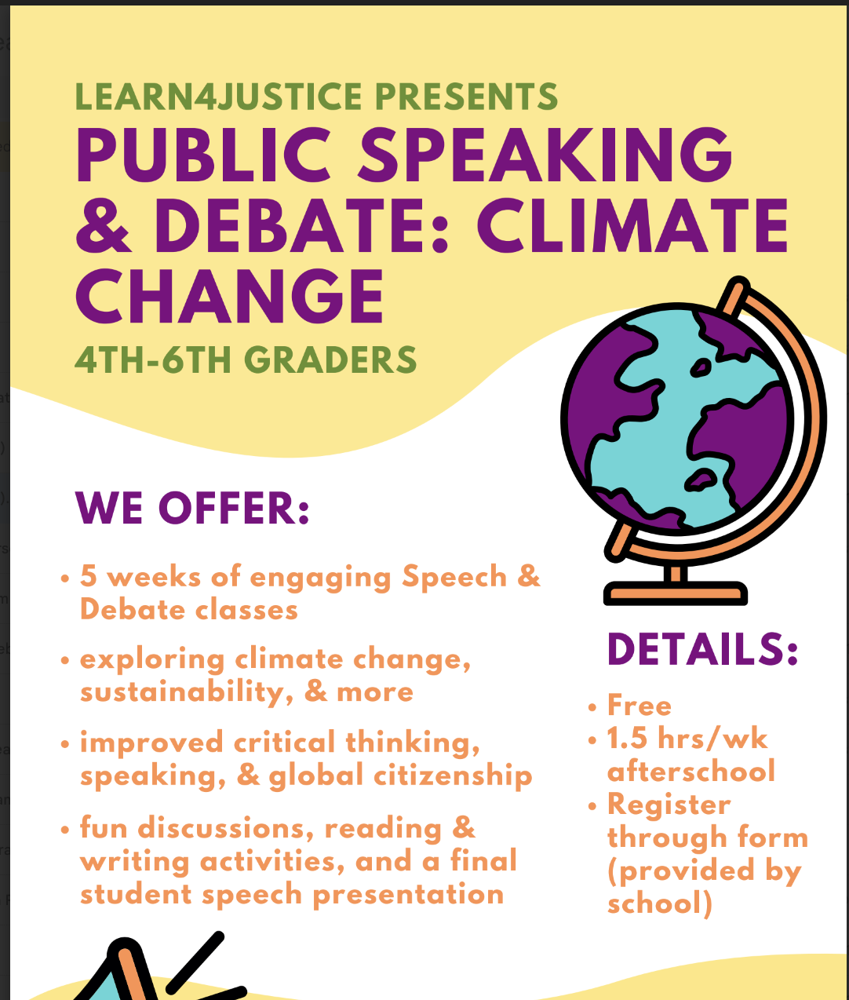
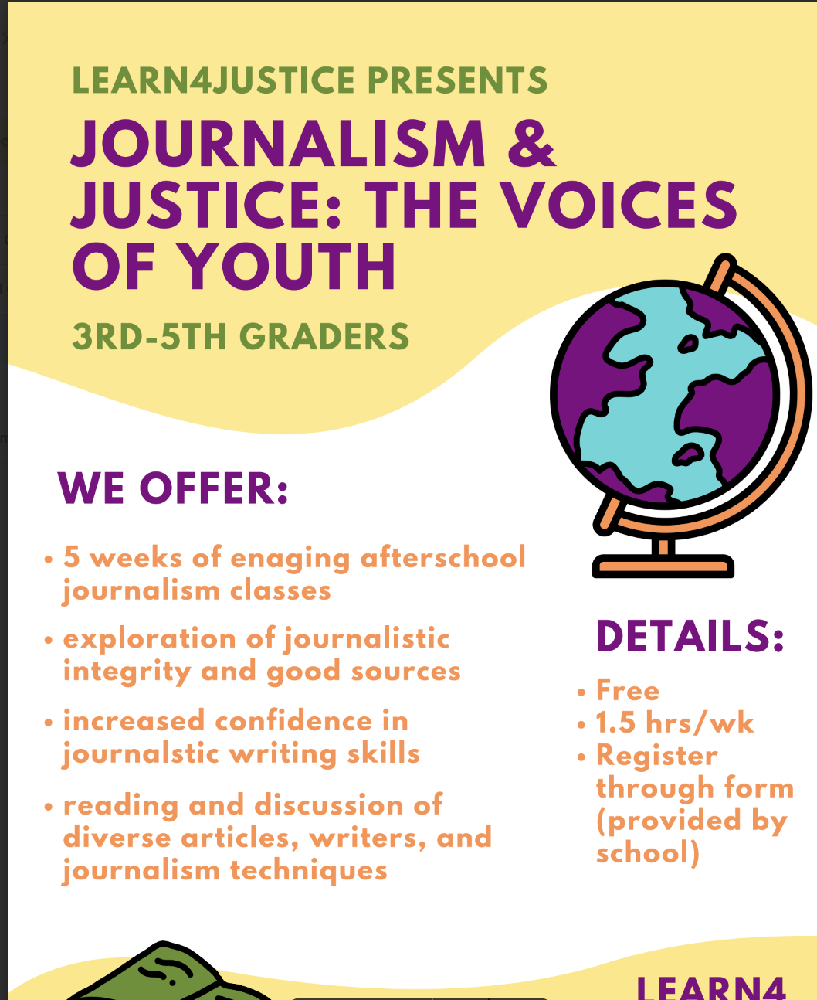
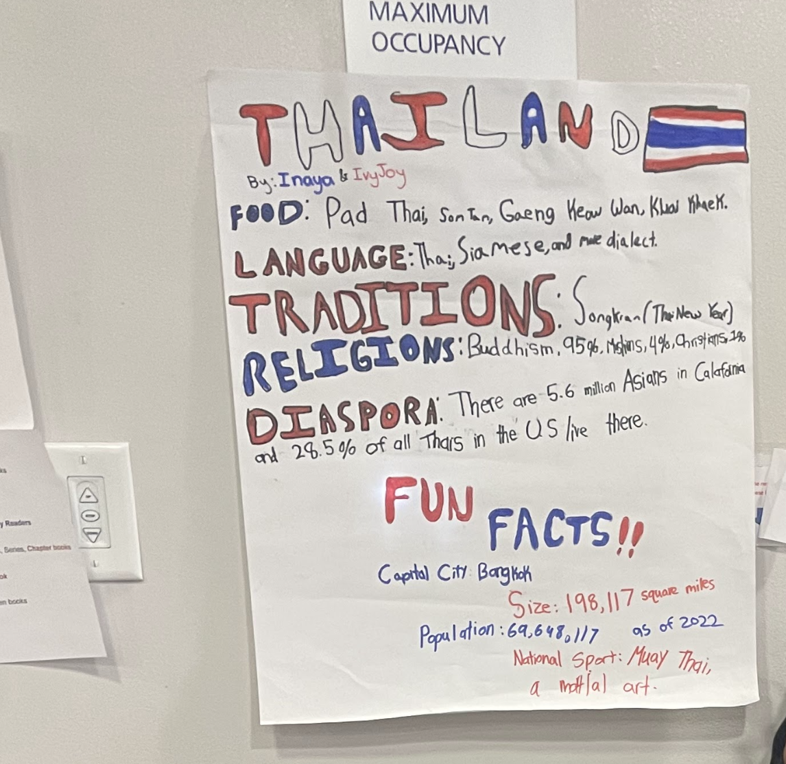
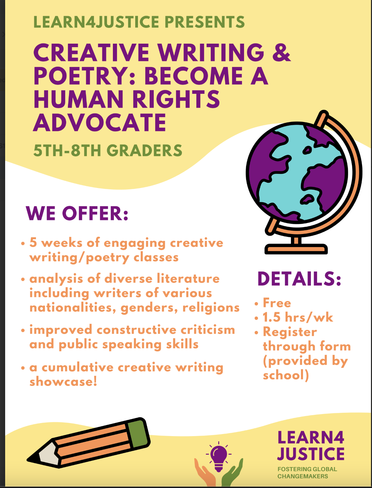

Our dynamic organization offers handwritten curriculum designed for youth BY youth. Our curriculum teaches our various subjects in a way that highlights social change and inspires youth to create a change in their own communities. We offer programs, such as Speech and Debate, Journalism, Creative Writing, Cultural Connections, and are expanding. We belive every subject can create social change and youth should be able to gain a passion and drive for social change from everyday subjects.
Speech and Debate Through Climate Change
This workshop walks students through a basic understanding of various climate issues, their impact, and solutions while also growing confidence in persuasive speaking and argumentative skills. The program will culminate in a speech presentation open to parents and is open to 4-6th graders.
Justice and Journalism: Exploring the Voices of Youth
Through this workshop, we aim to empower young children to speak up in a society that often overlooks their voices. By creating a safe and supportive environment, we encourage confidence and active listening, breaking the cycle that favors only the loudest voices and challenges stereotypes about introverted individuals.
Cultural Connections: Exploring Asia
This will be a 5-week/5 day program called Cultural Connections: Exploring Asia aimed at promoting cross-cultural understanding about Asia, and by the end, students will pick a specific country of their choice in Asia to create a mini-project on.
Creative Writing and Poetry: Become a Human Rights Advocate
This workshop-style series would encourage students to utilize creative writing and poetry as a tool to advocate for social justice. Over the course of five days, we would lead interactive lessons on writing techniques, showcase a diverse set of authors who have used writing as a form of advocacy, and provide a safe space for students to create their own writing projects.
We actively expand and are developing more justice oriented curriculum for youth in elementary schools + middle school
International Impact: Global Changemakers Program
We host a yearly online international program for teenagers worldwide intersted in social justice, advocacy, and meeting new people. Our program in both 2023 and 2024 has had over 40 people from countries all over Asia, Africa, South America, and North America. Every week for 5 weeks during the summer, they come together to converse about a new social justice issue every week. Through the program, they learn more about different countries, cultures, and ways of advocacy in workshop style sessions. For the remaining time, they discuss different social justice issues with other participants and share their own experiences. This program culminates in a final group project to discuss one specific social justice issue in detail in a creative format.